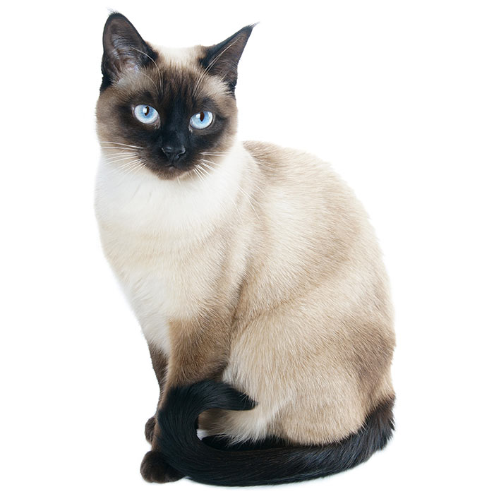

| Cat Breeds | Picture | Description |
|---|---|---|
| British Shorthair | Distinctively chunky body, commonly blue-grey, minimal shedding, lifespan 10-15 years. The breed's good-natured appearance and relatively calm temperament make them suitable family cats. It is the oldest breed of British cat. |
|
| Siamese Cat |  | The carefully refined modern Siamese is characterized by blue almond-shaped eyes; a triangular head shape; large ears; and an elongated, slender, and muscular body. Lifespan 15-20 years. |
| Russian Blue | The Russian Blue comes in varying shades of grey. Their coats are very dense, and they are famous for forming strong bonds with their owners. They are also considered to be hypoallergenic. Lifespan 10-16 years. |
|
| Egyptian Mau | A small-to-medium breed of short-haired cat. Similar to the Arabian Mau, they are quite vocal cats, often with beautiful markings. They are friendly, and the fastest of all domestic cats. Lifespan is often shortened by a tendency for gingivitis and liver problems but can be as long as any other cat. |
|
| British Longhair | The British Longhair is a longer-haired development from cross-breeding with the British Shorthair. They can be prone to obesity if neutered or kept as indoor cats, and are at a higher risk of kidney disease. They shed a lot if not brushed, but are very friendly. Lifespan 12-13 years. |